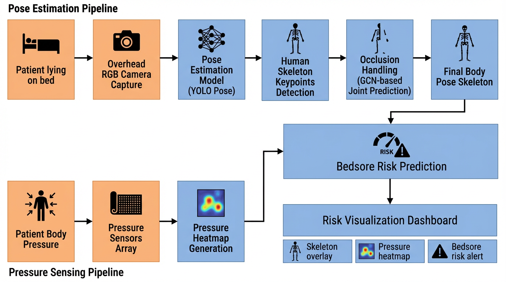

Medical AI
YOLO26s-Pose + GCN
SLP Benchmark
01. Bed is AI: Multimodal Patient Posture & Pressure-Ulcer Prevention
침대는 AI다 — 환자 자세 변화 감지와 압력 센서 기반 욕창 예방 AI
Fuses top-down RGB pose estimation with an Arduino pressure-sensor matrix to monitor bedridden patients under heavy blankets.
Adding pseudo-depth preprocessing and a 4-layer GCN (best_gcn.pt, val_loss 0.08098) improved SLP PCKh@0.5 from 0.487 to 0.518 and reduced MPJPE from 0.210 to 0.191 at 49.31 FPS.